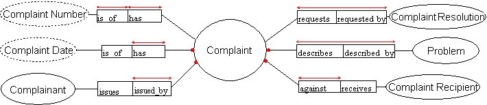

Customer Complaint Ontology
The "Complaint" module
Final Draft 21 May 2005
The diagram below shows the Complaint module,
which specifies the main concepts that can be associated with the concept
‘Complaint’. A ‘Complaint’ is defined in the
CC-Glossary as “An expression of
grievance or resentment issued by a complainant against a compliant-recipient,
describing a problem(s) that needs to be resolved”. A ‘Complaint’
must be issued by a ‘Complainant’ against a ‘Complaint-Recipient’,
on a certain ‘Date’. It must describe at least one ‘Problem’,
and may request one or more ‘Complaint Resolutions’. A ‘Complaint’
might be identified by a ‘Complaint Number’, which is typically
used as a unique reference in a court or a complaint system.
For the definition of each vocabulary in this diagram please see the CC-Glossary. Notice that according to our ontology design, each relation in this diagram is a lexon in the CC-Lexons; this methodological principle is called Ontology double-articulation.
This module is represented using the ORM graphical notation. The verbalization (i.e. the pseudo-natural-language reading) of the rules in this diagram, and the ORM markup (i.e. the XML-based serialization) of this diagram can be found below.
Diagram:

Verbalization:
ORM Markup:
 Complaint.ormgs
file
Complaint.ormgs
file- Complaint.ormml
file